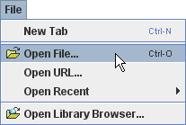 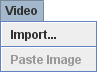
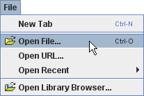 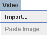
Video
Tracker lahko analizira tri različne tipe videa:
Poleg tega program podpira dva različna video pogona:
Če sta nameščena oba, Xuggle in QuickTime, lahko v Video zavihku preferenčnega pogovornega okna navedemo preferenčni video pogon. Privzeto preferenčen je Xuggle.
1. Odpiranje ali uvoz videa
Video odpremo v novem zavihku tako, da kliknemo na gumb Odpri ali izberemo Datoteka|Odpri. Če želimo uvoziti video v obstoječi zavihek, uporabimo menujsko izbiro Video|Uvozi, Video|Prilepi ali Datoteka|Uvoz|Video.
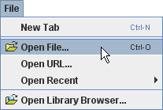 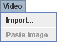
V izbiralniku datotek izberemo želeni video in ga odpremo. Če datoteko lahko odpremo tako z Xuggle kot s QuickTime, bomo imeli možnost izbire.
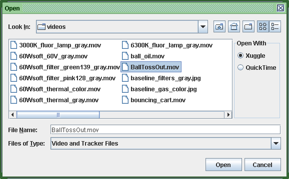
2. Odpiranje oštevilčenih slikovnih sekvenc
Tracker avtomatično odpre zaporedje do 1000 slik JPG ali PNG, ki morajo biti zaporedno oštevilčene. Zaporedje odpremo tako, da izberemo le prvo sliko zaporedja.
Številčenje zaporedja slik mora imeti fiksen format. Če na primer izberemo prvo sliko zaporedja, oštevilčenega kot image00.jpg do image14.jpg, bomo odprli vseh 15 slik. Če pa bi bilo zaporedje oštevilčeno z image0.jpg do image14.jpg, bi odprli le prvih 10 slik (torej do slike image9.jpg).
3. Prilepljenje slike z odložišča
Slike, kopirane na odložišče, lahko kopiramo direktno v program Tracker in alaniziramo. Izberemo Video|Prilepi sliko ali Video|Prilepi sliko|Zamenjaj video in tvorimo nov slikovni video.
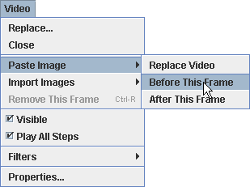
4. Dodajanje in odstranjevanje slik iz slikovnega videa
Potem ko smo tvorili slikovni video, lahko prilepljamo ali uvažamo dodatne slike s pomočjo opcij Video|Prilepi sliko ali Video|Uvozi slike in to pred to sličico ali za to sličico.
Slike lahko iz slikovnega videa odstranjujemo z izbiro Video|Odstrani to sličico.
Pri uvažanju slik lahko v izbiralniku datotek s pomočjo CTRL/klik ali SHIFT/klik izberemo več slik.
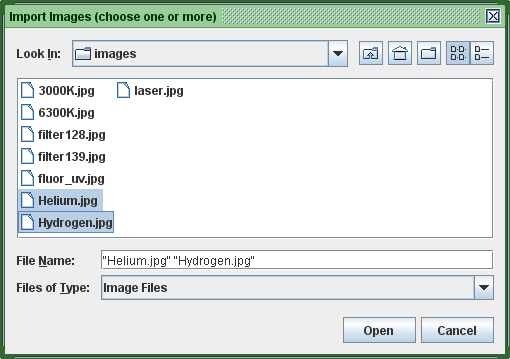
5. Shranjevanje prilepljenih slik
Pri zapiranju ali shranjevanju slikovnega videa, ki vsebuje prilepljene slike, se pojavi opozorilo, ki nas opozori, da naj , če želimo, slike shranimo kot datoteke. Če želimo slike kasneje spet odpreti, jih moramo shraniti.
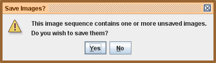
Video izrezek je podmnožica sličic v videu, ki jo določajo:
Začetna sličica je podana s številko sličice v prvem koraku, velikost koraka je prirastek sličic med zaporednimi koraki, končna sličica je številka sličice pri zadnjem koraku. Tako na primer bi video izrezek z začetno sličico 3, velikostjo koraka 2 in končno sličico 11 imel korake 0, 1, 2, 3 in 4, ki bi ustrezali video sličicam s številkami 3, 5, 7, 9 in 11. (Opomba: končna sličca mora imeti številko, ki je mnogokratnik števila korakov plus številka začetne sličice.)
Video izrezek je določen za vsak video in celo za "prazen" video.V primerih praznih videov in videov z eno samo sličico nastavitve izrezka veljajo za sledi, pri čemer v vsakem koraku uporabimo isto sličico.
Lastnosti video izrezka nastavljamo z video predvajalnikom oziroma z inšpektorjem izrezka.
Opomba:
Za prikaz inšpektorja video izrezka kliknemo na gumb Nastavitve izrazka (Clip settings) v orodni vrstici.
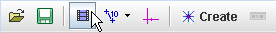
Inšpektor video izrezka prikazuje trenutne nastavitve video izrezka in omogoča nastavljanje začetnega časa (časa, dodeljenega koraku 0), prave hitrosti (frame rate, kar je pomembno pri pospešenih ali upočasnjenih video posnetkih) in časovnega intervala dt med sličicami (inverzno od hitrosti).

8. Uporaba video predvajalnika
Video predvajalnik je običajno prilepljen na video pogled, vendar lahko predvajalnik z vlečenjem levega roba odlepimo, če to želimo.

Predvajalnik vsebuje (od leve proti desni):
S klikom na polje s števcem časa preklapljamo na števec časa v sekundah ali števec korakov (relativno od začetne sličice). Privzeto vidimo v tem polju prikaz številke sličice.
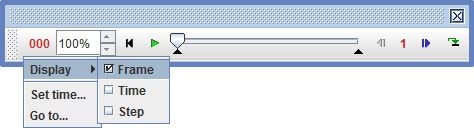
V polju s hitrostjo predvajanja 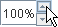lahko nastavimo hitrost (% normalnel) ali vnesemo razmerje direktno v polje.
Sklikom na gumb reset resetiramo video na korak 0.
S klikom na gumb poganjamo ali zaustavljamo predvajanje.
S pomočjo drsnika lahko video hitro pregledujemo ali se hitro premaknemo na želeno sličico.
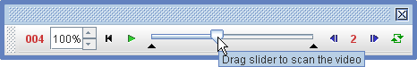
Začetno in končno sličico nastavljamo z vlečenjem črnih puščic "vstop" oziroma "izstop" ali z desnim klikom na drsnik.
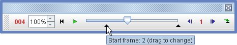
S klikom na gumb se premaknemo naprej za en korak, lahko pa uporabimo tipko PageDown na tipkovnici. S klikom na gumb se premaknemo en korak nazaj, lahko pa za to uporabimo tipko PageUp na tipkovnici.
S klikom na kontrolo za velikost koraka nastavljamo velikost koraka v številu sličic na korak.
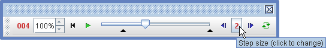
S klikom na gumb vklapljamo ali izklapljamo predvajanje v zanki (neprestano predvajanje).
S klikom na gumb za povečavo v orodni vrstici (bližnjica: tipka Z ) vključimo orodje za povečavo, s katerim laho video sliko do 8x povečamo. Z vključenim orodjem za povečavo postavimo kurzor povečave na opazovano področje in povečamo ali (a) s klikom na miško ali (b) z vrtenjem mišjega kolesca.
Klik na gumb prestavi povečavo v približevanje(zoom in) (mišji kurzor ingumb prikazujeta ikono povečave). Ponoven klik spremeni režim v pomanjšanje oziroma oddaljevanje (mišji kurzor in gumb kažeta ikono pomanjšave). Oddaljevanje (pomanjševanje) dosežemo tudi tako, da držimo tipko Alt.
Zoom button with zoom off, zoom-in and zoom-out icons
Z dvoklikom na gumb povečave dosežemo nivo povečave, ko se video slika povsem ujema z oknom glavnega pogleda na video.
Druga možnost povečave je z desnim klikom na video in z izbiro želenega nivoja povečave v spodaj prikazanem spustnem menuju.

10. Video filtri
Video filtri omogočajo spreminjanje video slike. Popoln opis filtrov najdemo v poglavju o video filtrih.
11. Skrivanje in zapiranje videa
Če želimo skriti video sliko in prikazati sledi na belem ozadju, odstranimo kljukico v menujski izbiri Video|Viden. Z izbiro Video|Zapri za stalno odstranimo video.
Opomba: če odstranimo ali zamenjamo video, se tvori nov video izrezek. To lahko povzroči, da imajo nekatere sledi korake, ki niso več vključeni v izrezek ali pa imamo neoznačene korake, ki so vključeni na novo. Če se to zgodi, odpravimo problem z resetiranjem začetne sličice, velikost koraka in končne sličice novega izrezka.
12. Izvoz video izrezka
Tracker lahko izvozi trenuten video izrezek kot video datoteko, animiran GIF alislikovno zaporedje. Tako deluje kot preprost video urejevalnik in prekodirnik. Vendar vsebujejo izvoženi video posnetki tudi plasti s sledmi, video filtri in dodatnimi pogledi, kot so pogledi sveta in diagrami. Tako so uporabni za dokumentiranje rezultatov video modeliranja ali analize.
Opomba: Izvoženi video vsebuje le sličice tekočega video izrezka (določenega z začetno sličico, velikostjo koraka in končno sličico), ne celoten video.
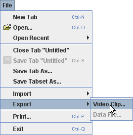
Video izrezek izvozimo tako, da v menuju izberemo Datoteka|Izvoz|Video izrezek.... S tem odpremo pogovorno okno za izvoz video izrezka.
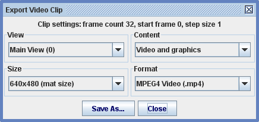
Izberemo pogled,ct the view, vsebino in format izvažanega videa. Izbira vsebine je odvisna od izbranega pogleda, kot sledi:
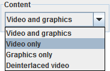